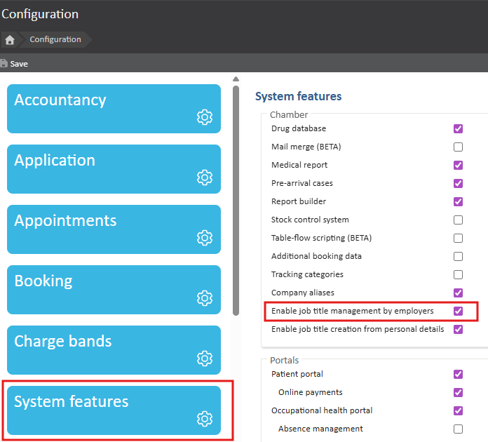
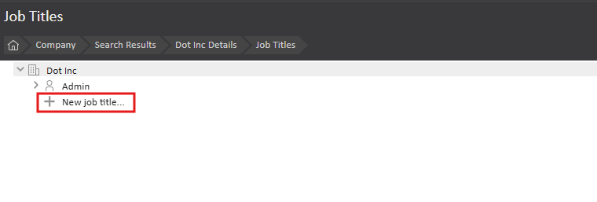
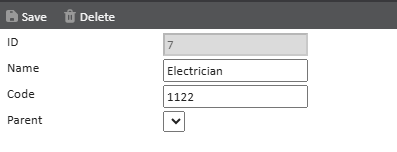
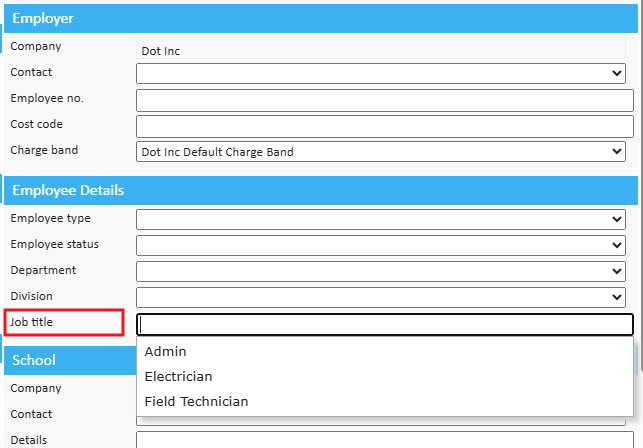
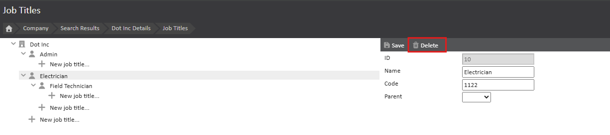
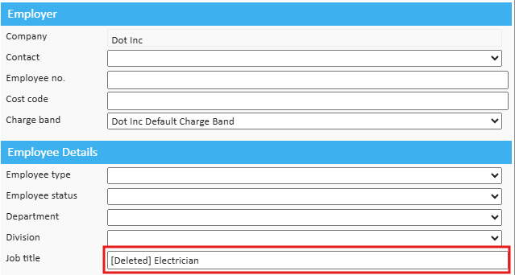

The Job Title demographic field on a patient record can be centrally managed for the entire chamber or for each Employer type Company. Managing job titles ensures that it is a predictable field in the patient record that can be relied on to match requirements where relevant.
To enable Job Title Management in your Chamber, please contact support or your account manager.
What is the purpose of the article?
This article describes the following:
Job title management must be enabled for your chamber before job titles can be configured. To enable job title management:

Job titles are configured and managed from the Company Details page. To add job titles:


You can continue adding new job titles.
Once job titles have been created for the Employer Company, when updating the Employee Details section, a list of the available job titles appears and is filtered as you type a title.

Job titles can be deleted from the Company Details page. Deleting a parent job title deletes all child titles. To delete job titles:

If the deleted job title was assigned to a record, it will display [Deleted] in the Job Title field of the patient record.
